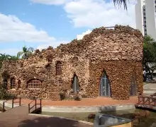

municipio de Limeira
Um pouco sobre nosso Municipio
Historia de Limeira
A cidade de Limeira, localizada no estado de São Paulo, foi oficialmente fundada em 1826. A origem do nome "Limeira" está ligada a uma lenda popular que envolve um frei franciscano chamado João das Mercês, que acompanhava uma caravana de bandeirantes. Segundo a lenda, ele teria morrido ao passar uma noite no rancho do Morro Azul, levando consigo limas que, supostamente, curavam febres. Após sua morte, uma limeira teria brotado do local onde ele foi sepultado, dando nome à cidade

Desenvolvimento Inicial
- A povoação começou a se formar ao longo da estrada que ligava Morro Azul a Campinas, atraindo colonizadores devido à fertilidade das terras. O Capitão Luiz Manoel da Cunha Bastos foi um dos principais responsáveis pela fundação, consentindo a construção da capela de Nossa Senhora das Dores de Tatuhiby, que se tornou um marco da cidade.
Crescimento Econômico
- Limeira se desenvolveu rapidamente, especialmente com a chegada da ferrovia em 1884, que facilitou o escoamento da produção agrícola, principalmente de café e laranja. A cidade se tornou um importante centro agrícola e industrial, diversificando sua economia ao longo do tempo.
Cultura e Tradições
- A cidade é rica em herança cultural, refletida em suas festividades e arquitetura. A Festa do Peão de Boiadeiro é um evento significativo que celebra a cultura sertaneja e atrai visitantes de várias partes do Brasil. Limeira também abriga diversas igrejas históricas, como a Igreja Matriz de Nossa Senhora das Dores, um exemplo notável da arquitetura colonial.